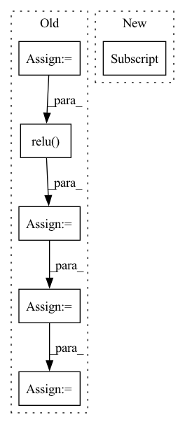

Pattern ID :1672
Before Change
// print("grads: {}".format(grads))
// print("weights: {}".format(type(weights)))
gcam = torch.mul(fmaps, weights).sum(dim=1, keepdim=True)
gcam = F.relu( gcam)
gcam = F.interpolate(
gcam, self.image_shape, mode="bilinear", align_corners=False
)
B, C, H, W = gcam.shape
gcam = gcam.view(B, -1)
gcam -= gcam.min(dim=1, keepdim=True)[0]
gcam /= gcam.max(dim=1, keepdim=True)[0]After Change
gcam_tensor = self.generate_helper(fmaps, weights)
gcam = []
for i in range(self.logits.shape[0]):
gcam.append(gcam_tensor[i] )
return gcam
In pattern: SUPERPATTERN
Frequency: 4
Non-data size: 6
Instances Fragment ID: 7777396
Project Name: karol-g/gcam
Commit Name: 4d3673129f7f35d0b6ea05944a037268b4da45b2
Time: 2020-01-02
Author: KarolGotkowski@gmx.de
File Name: evaluation_models/grad_cam/grad_cam.py
M Class Name: GradCAM
N Class Name: GradCAM
M Method Name: generate(2)
N Method Name: generate(2)
M Parent Class: _BaseWrapper
N Parent Class: _BaseWrapper
M File Name: evaluation_models/grad_cam/grad_cam.py
N File Name: evaluation_models/grad_cam/grad_cam.py
M Start Line: 209
M End Line: 228
N Start Line: 231
N End Line: 244
Before Change
assert x.shape[1] == self.channels
// BxCxL
theta = torch.mean(x, axis=-1)
theta = self.fc1(theta)
theta = self.relu( theta)
theta = self.fc2(theta)
theta = 2 * self.sigmoid(theta) - 1
relu_coefs = theta.view(-1, self.channels, 2*self.k) * self.lambdas + self.init_v
// BxCxL -> LxBxCx1After Change
x_perm = x.permute(2, 3, 0, 1).unsqueeze(-1)
output = x_perm * relu_coefs[:, :, :self.k] + relu_coefs[:, :, self.k:]
// HxWxBxCx2 -> BxCxHxW
result = torch.max(output, dim=-1)[0] .permute(2, 3, 0, 1)
return result
Fragment ID: 7777021
Project Name: islanna/dynamicrelu
Commit Name: 1ee4394be4c9e5517d7dc2e5605416b65b321e53
Time: 2020-04-14
Author: slizhikova.a.v@gmail.com
File Name: dyrelu.py
M Class Name: DyReLUB
N Class Name: DyReLUB
M Method Name: forward(2)
N Method Name: forward(2)
M Parent Class: DyReLU
N Parent Class: nn.Module
M File Name: dyrelu.py
N File Name: dyrelu.py
M Start Line: 55
M End Line: 66
N Start Line: 62
N End Line: 80
Before Change
// Read gate of the GRU.
read_gate_conv = layers.SNConv2D(num_channels, self._kernel_size, sn_eps=self._sn_eps)
read_gate = F.sigmoid(read_gate_conv(xh))
// Update gate of the GRU.
update_gate_conv = layers.SNConv2D(num_channels, self._kernel_size, sn_eps=self._sn_eps)
update_gate = F.sigmoid(update_gate_conv(xh))
// Gate the inputs.
gated_input = torch.cat([x, read_gate * prev_state], dim=1)
// Gate the cell and state / outputs.
output_conv = layers.SNConv2D(num_channels, self._kernel_size, sn_eps=self._sn_eps)
c = F.relu( output_conv(gated_input))
out = update_gate * prev_state + (1.0 - update_gate) * c
new_state = out
return out, new_state
After Change
outputs = []
for step in range(x.size(1)):
// Compute current timestep
output, hidden_state = self.cell(x[:, step, :, :, :] , hidden_state)
outputs.append(output)
// Stack outputs to return as tensor
outputs = torch.stack(outputs, dim=0) Fragment ID: 7776970
Project Name: openclimatefix/skillful_nowcasting
Commit Name: b080785f5f559396d0b7e1a52d1c6d9a948d9439
Time: 2021-11-08
Author: jacob@bieker.tech
File Name: nowcasting_gan/layers/ConvGRU.py
M Class Name: ConvGRU
N Class Name: ConvGRU
M Method Name: forward(3)
N Method Name: forward(3)
M Parent Class: torch.nn.Module
N Parent Class: torch.nn.Module
M File Name: nowcasting_gan/layers/ConvGRU.py
N File Name: nowcasting_gan/layers/ConvGRU.py
M Start Line: 19
M End Line: 51
N Start Line: 70
N End Line: 78
Before Change
def forward(self, x):
x = self.conv1(x)
x = self.bn1(x)
x = self.relu( x) // 32x32
x = self.layer1(x) // 32x32
x = self.layer2(x) // 16x16
x = self.layer3(x) // 8x8
x = self.avgpool(x)
x = x.view(x.size(0), -1)
x = self.fc(x)
return x
After Change
out = self.layer1(out)
out = self.layer2(out)
out = self.layer3(out)
out = F.avg_pool2d(out, out.size()[3] )
out = out.view(out.size(0), -1)
out = self.linear(out)
return out Fragment ID: 7777145
Project Name: lehduong/knowledge-distillation-by-replacing-cheap-conv
Commit Name: c21fd1d675f1df0d076e4efb312e30a15dc1c6ba
Time: 2020-03-10
Author: oopsxilitol@gmail.com
File Name: models/cifar_models/resnet.py
M Class Name: ResNet
N Class Name: ResNet
M Method Name: forward(2)
N Method Name: forward(2)
M Parent Class: nn.Module
N Parent Class: nn.Module
M File Name: models/cifar_models/resnet.py
N File Name: models/cifar_models/resnet.py
M Start Line: 147
M End Line: 159
N Start Line: 110
N End Line: 117